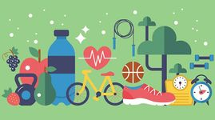

Здоровый образ жизни — образ жизни человека, направленный на профилактику заболеваний и укрепление здоровья.
Это рационально организованный, активный, трудовой, защищающий от неблагоприятных воздействий окружающей среды, позволяющий до глубокой старости сохранять нравственное, психическое и физическое здоровье.
Актуальность ведения здорового образа жизни вызвана возрастанием и изменением характера нагрузок на организм человека в связи с усложнением общественной жизни, увеличением рисков техногенного, экологического, психологического, провоцирующих негативные сдвиги в состоянии здоровья.
Основные компоненты здорового образа жизни: 